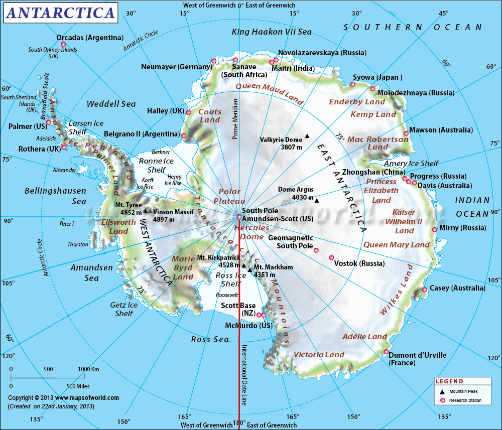

Lat Long Coordinates:90.00 S, 0.00 E
Area:14 million sq km (5th largest continent)
Population81,799
Ice Covered Area:13.72 million sq km
Ice-free land:280,000 sq km (<1%)
Deepest Ice Core Drilled:950, 000 years old at its bottom
Coastline:17,968 km
Lowest Point:Bentley Subglacial Trench -2,540 m
Highest Point:Vinson Massif 4,897 m
Lowest recorded temperature:89.6l°C (Vostok station)
Estimated visitors:46,091 (Est 2007-08)
Highest elevation:4900m (Vinson Massif)
GDP (PPP):$1.12346
Internet code:.aq